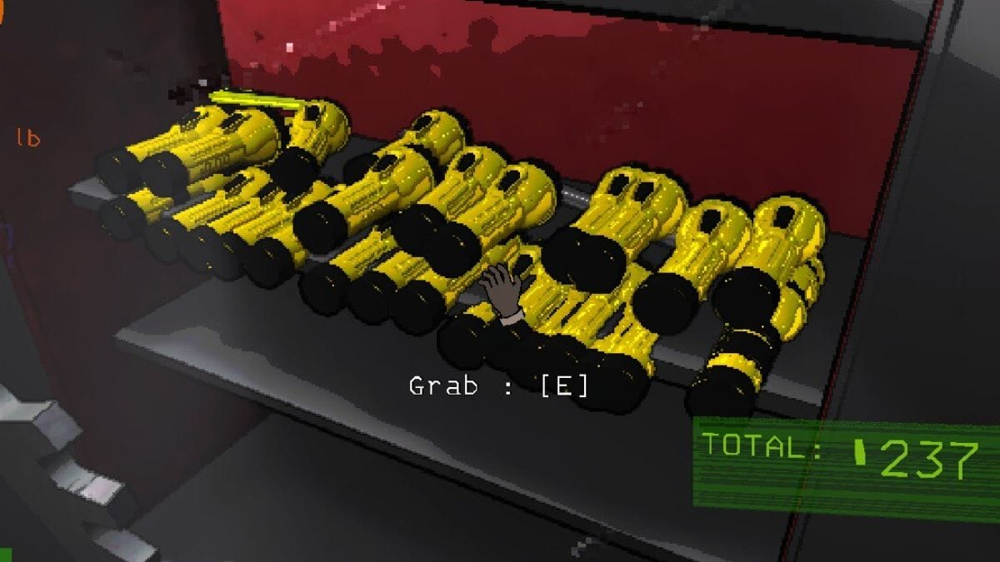
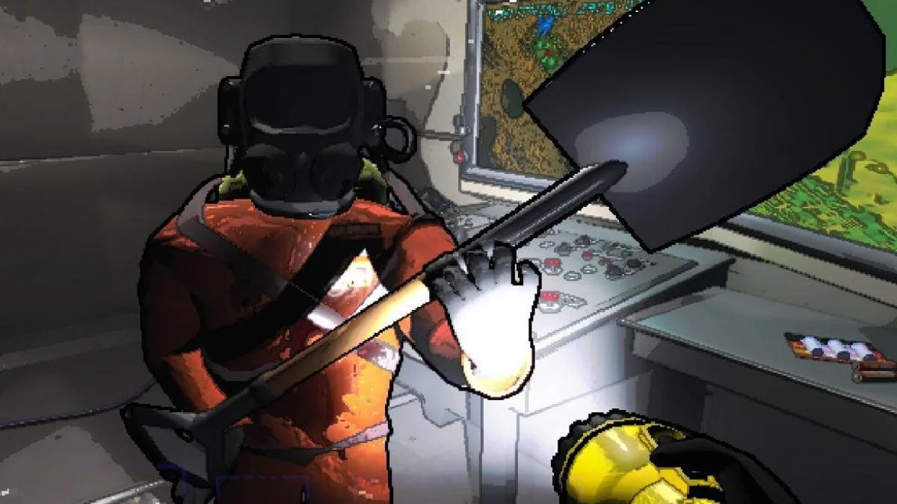
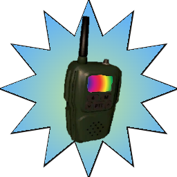

Dans Lethal Company, il y a plusieurs objets qui peuvent servir à améliorer la qualité du jeu, notamment pour se défendre contre les monstres ou récupérer des objets... Parmi les objets les plus utiles, on peut retrouver :
- Lampes torches : Les lampes torches permettent de s'éclairer à l'intérieur de l'usine abandonnée ou lorsque la luminosité est faible. Elles améliorent la visibilité et aident à éviter les dangers.
- Pelles Il existe aussi les pelles qui sont très utile pour se défendre contre plusieurs monstres présent dans le jeu. Avec cet objets, on peut utiliser tuer les monstres ou même les repousser, mais on peut également éliminer nos coéquipier mais je vous déconseille fortement (cela n'étant bien évidement pas très sympathique). Cet objet est situé à l'intérieur de l'usine mais peut être aussi acheter avec l'aide du terminal disponible dans le vaisseau. La pelle est donc un élément presque essentiel pour jouer.
- Talkie-Walkies comment parler des objets sans parler des talkie walkie, cet objet permet de communiquer avec ses coéquipiers. Cet objet est primordiale pour guider les joueurs vers des objets et les prévenir en cas de danger, tels que les monstres ou encore d'autres pièges disponible dans le jeu.
Autres Objets Intéressants
il existe encore une vingtaine d'objet disponible dans le jeu. Chacun est unique en son genre, certains font juste partie du décor. Voici quelques mentions honorables : Les Boombox: ces radios permettent de jouer de la musique directement en jeu, cela permet d'établir une bonne ambiance. Cependant, cet objet produit du bruit dans le jeu qui peut attirer des monstres. Le Jetpack: objet très sympa permettant de se transporter rapidement, mais il est assez difficile à prendre en main et il n'est pas très intuitif, mais cet objet peut donner lieu à des moments très drôles.